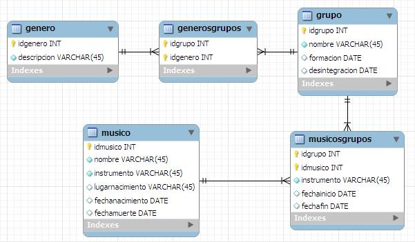

El modelo entidad relación es un diagrama que sirve como herramienta para el modelado de datos. Facilita la representación de las entidades en una base de datos y cuales son sus relaciones. Se caraceriza por utilizar una serie de símbolos y reglas para representar los datos con sus respectivas relaciones, con este modelo se consigue representar de manera gráfica la estructura y lógica de una base de datos.
Un modelo de entidad relación (modelo E-R) es el diseño de la estructura lógica de una base de datos, que luego se podrá implementar como una base de datos real. Los componentes principales del modelo E-R son un conjunto de entidades y de relaciones. Un modelo de entidad relación describe cosas de interés interrelacionadas en un dominio específico de conocimiento

El modelo relacional de bases de datos es un método para estructurar datos utilizando relaciones, mediante estructuras en forma de cuadrícula, que consisten de columnas y filas. Es el principio conceptual de las bases de datos relacionales y fue propuesto por Edgar F. Codd en 1969
